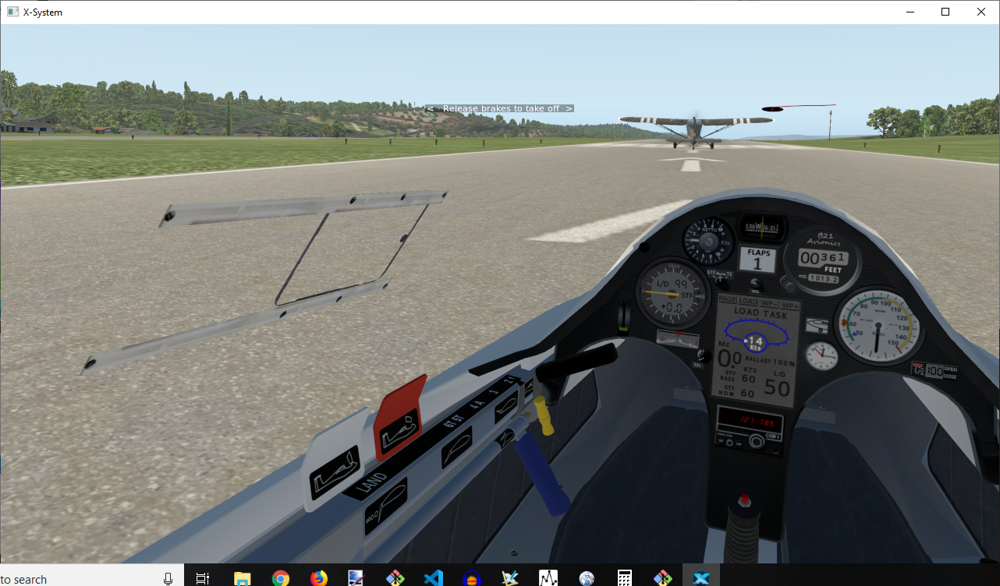
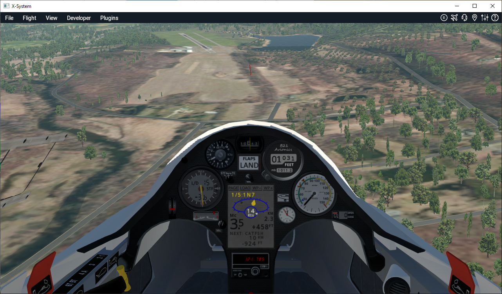

BETA this glider is still in development, including these docs
This Schleicher ASG-29 for X-Plane is an 18 meter, flapped, ballast-capable glider with
a very high gliding performance across a wide speed range and a state-of-the-art instrument
panel.
X-Plane commands if you want to set joystick buttons or keystrokes.
User settings to change instrument units and other settings.
Credits
Thanks to Chris "Nodd" Evans for extensive testing, I recommend you check out his YouTube channel:
Overview
The ASK21_B21 is a comprehensive upgrade of the stock X-Plane ASK21. The most significant changes are to
instrument panel (see below) but also the flight model has been re-worked and tools used to ensure the glide
performance (i.e. the polar) is close to the real aircraft as possible.
There are additional improvements for example in the various sounds, switchable instruments for imperial/metric units, and configurable commands in general intended
to make the glider enjoyable to fly. But it is the programming of the existing and new panel gauges where
the most significant changes have been made.


Summary of Features
Competition-grade variometers giving total energy, netto and speed-to-fly.
GPS Nav instrument using stock X-Plane flightplans for the cross-country task.
Re-worked flight model for accurate polar and reasonable flight characteristics.
User settings file provided so default setup can be adjusted, such as the vario sound
'quiet band' and the units used for speed, height etc in the instruments.
Updated sounds for general 'wind', spoilers, trim, vario.
Waypoint arrival height calculation based on computer vario and gpsnav data.
'Trigger' trim command to set trim to current airspeed. Additional commands added so
panel buttons (next waypoint, etc) can be configured to joystick or keyboard.